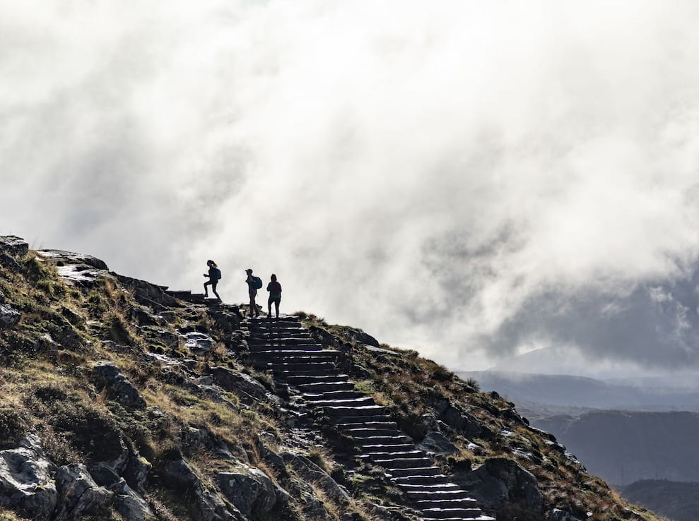
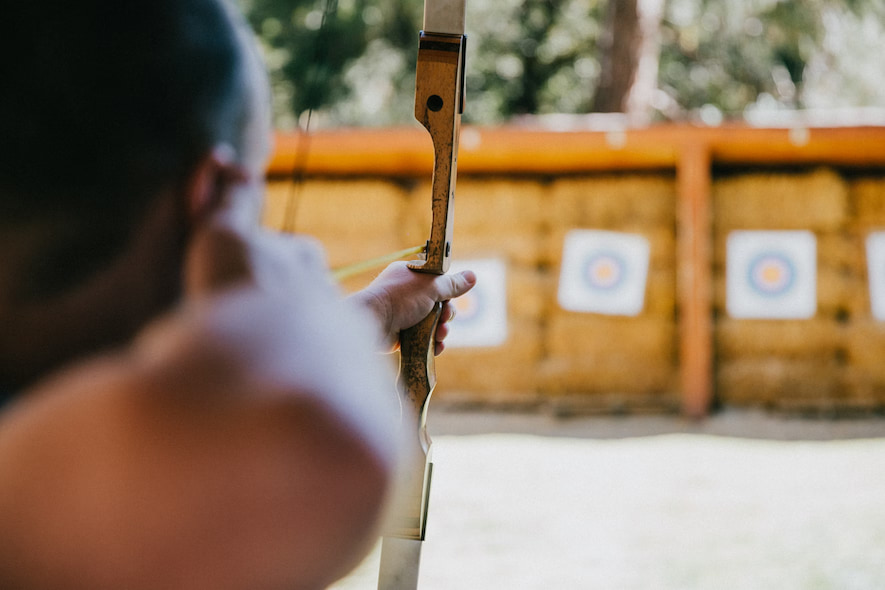
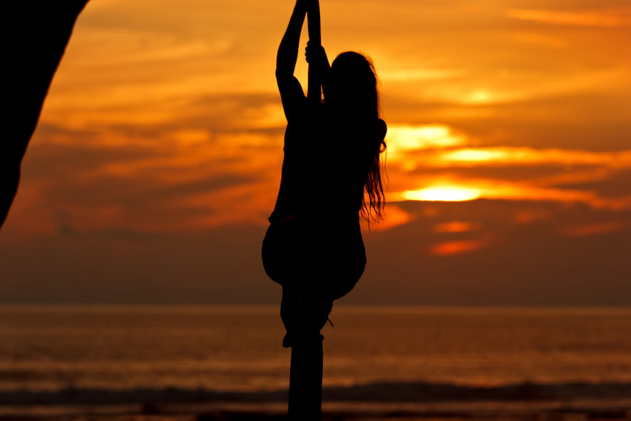
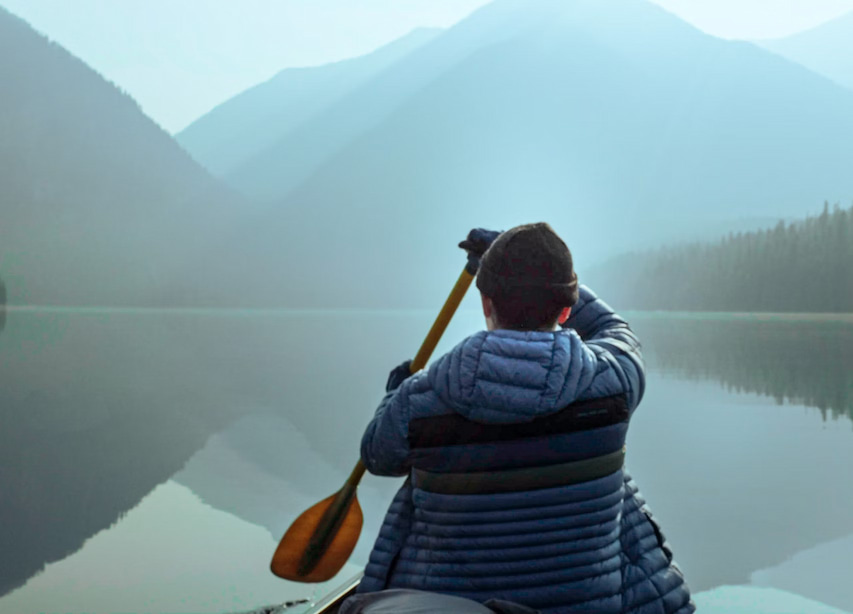

About Lochquarry Outdoor Centre
Lochquarry Outdoor Centre is set in acres of land in the heart of the majestic Argyll hills. On our doorstep is not only magnificent scenery, but also a breath-taking selection of outdoor and adventurous activities.
With activities designed to meet the needs of all ages and experiences of young people, Lochquarry truly brings adventure to everyone.
Each activity is run under the instruction of one of our highly trained staff and all safety equipment is provided.
Why Choose Us?




We provide exciting experiences in a safe and supportive environment. Young people can develop teamwork, confidence and outdoor skills while having fun.
Our centre is popular with schools, Scouts, Guides and youth groups from across Scotland.
Customer Review
“We had a great time and loved all the different activities that we did” - 8th Gourock Guides
Useful Outdoor Information
Visit the official outdoor safety website for more information:
Mountaineering Scotland